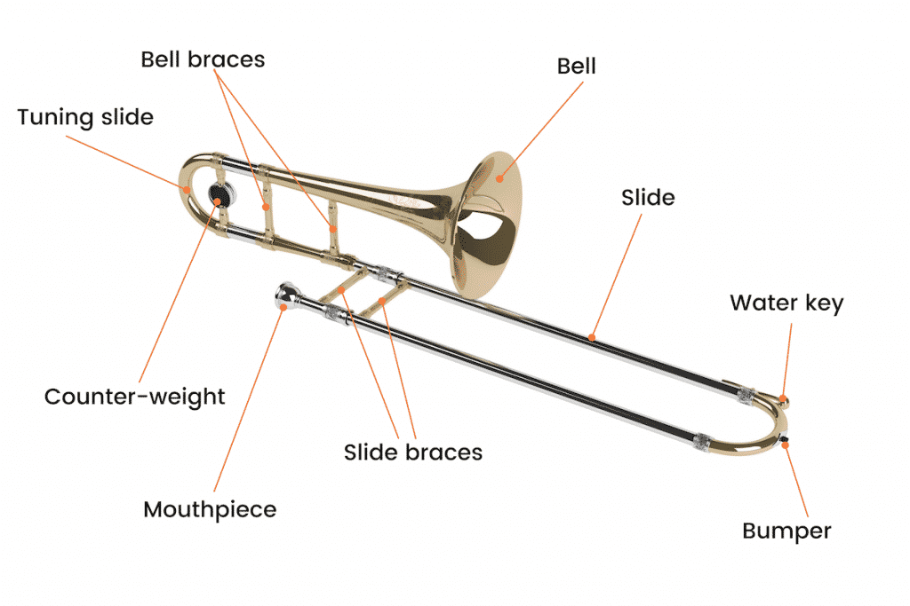
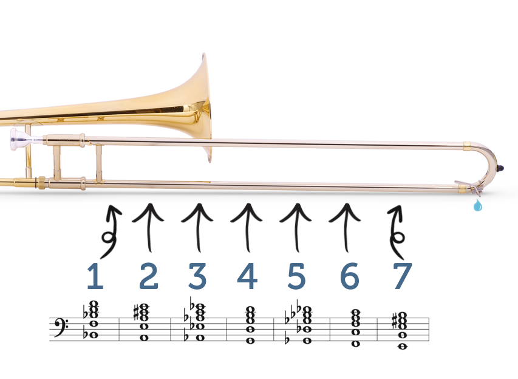
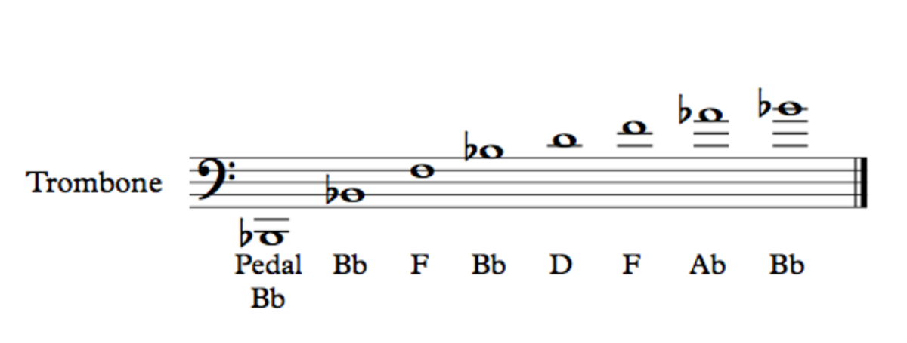
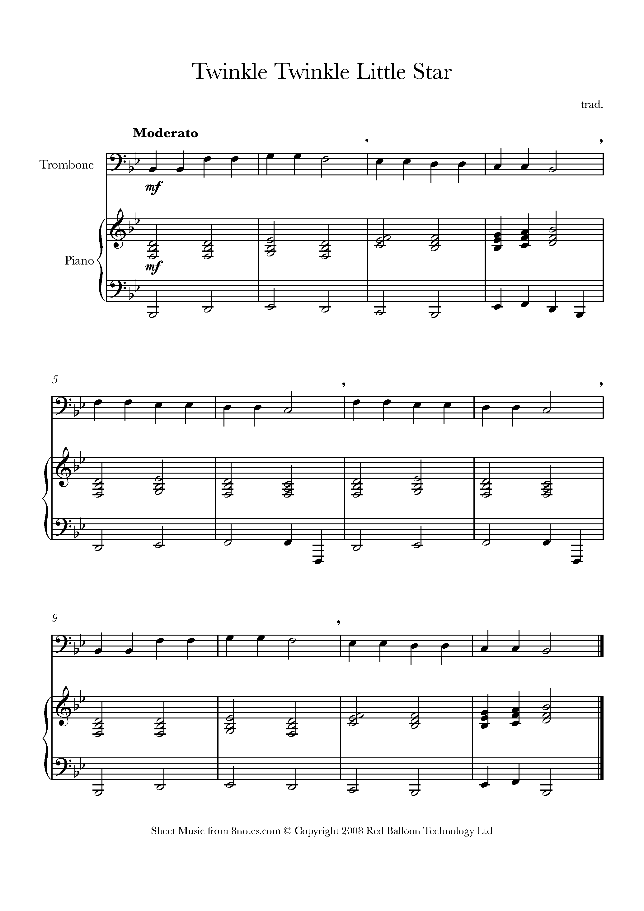

Middle of the 15th century saw the invention of the trombone, which wasn't given its current name until the
18th.
The trombone's original names were "Saqueboute" in French and "Sackbut" in English between the 15th and 18th
centuries.
It is thought that they were given this name because of how trombone players slide the tube in a manner akin
to how swordsmen pulled out their weapons.
Since it can be thought of as an evolution of the trumpet, the current name, trombone, also means large
trumpet.
Although the trombone's creator was unknown throughout history, we do know that west Europe is where it
first appeared.
The trombone is also part of the brass family of instruments.
The Evolution of the Trombone
Over time, there were many developments that happened to the trombone from the 15th century to the modern
day.
There haven't been many changes made to the trombone over the centuries, from the 15th century to the
present.
The trombone's modern larger bore and bell size would be one of the primary changes.
Three different trombone types: straight tenor, trigger-type tenor, and bass trombones, are one of the other
major changes.
There are many people however that contributed to the growth in popularity of the trombone. Those people
include Joseph Alessi, Arthur Pryor,
J.J Johnson, Glen Miller, Tommy Dersey, and many others.
HOW TO PLAY THE TROMBONE
The Parts of the Trombone
Before we start looking at the notes and how to play the trombone, we should go over the parts of a
trombone.
The trombone is made up of a variety of components that work together to give it its distinctive sound.
Below is an image that can help illustrate the parts of a Trombone.

The three main parts of the Trombone are the bell, the slide, and the mouthpiece.
These components can be assembled and disassembled, and when not in use, they can be stored in the instrument's
case, which makes them the main components.
The mouthpiece can come in a variety of sizes and if you are a beginner it is recommended that you don't keep
switching and get used to the one you currently use.
Apply light pressure while placing the mouthpiece into the receiver so that it does not get stuck when
assembling.
Also, you would want to connect the 2 ends of the bell section to the 2 ends of the tuning slide while
assembling.
You would also want to make sure that you attach the bell section the main slide.
How to Play the Trombone
First, in order to create a sound using the trombone you would want to blow through the mouthpiece while
making an "o" shape with your lips.
You could tighten your lips to play notes with a higher pitch, and you would want to loosen them to play
notes with a lower pitch.
The harder you blow using the mouth piece, the louder the music would play. You would also want to learn the
positions on the slide.
Each position has a different note it could play as you slide from one position to another and helps you
play the notes that you want too.
Below are pictures that show you the notes for each position on the slide that you can refer to.
Notes and Slide Positions for Trombone


Tips to Help You Play the Trombone
One of the main tips would be to memorize the first three positions of the slide and the last four positions
of the slide.
This would be a much easier way to memorize all the positions while playing and can help you a lot as the
first three positions are located before the bell,and last four are located after the bell.
Another tip would be to increase your lung capacity. When you play the trombone, you would be blowing a lot
and this requires a lot of lung capacity.
Activities such as running, biking, or any cardio activities would help you improve your lung capacity.
You should also always make sure that you are locking the slide when you are not using it to avoid any
accidents.
These are some of the tips that can help you improve your skills while playing the trombone.
Practice Song for the Trombone
For our practice example, we will be learning to play Twinkle Twinkle Little Star. To help improve your
skills, you can practice
by trying to play Twinkle Twinkle Little Star using the music note sheet shown below.

Here is an audio file for how Twinkle Twinkle Little Star would sound on a Trombone.